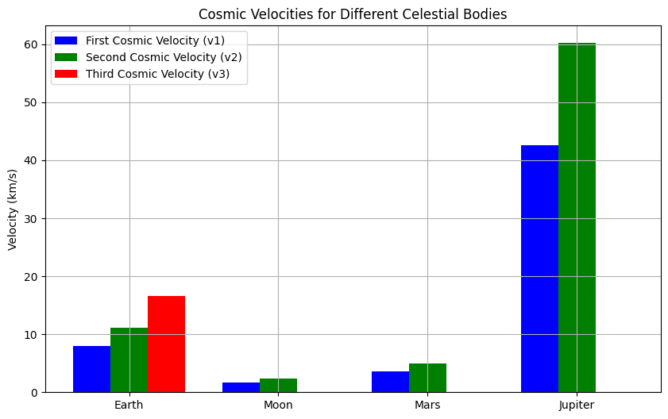
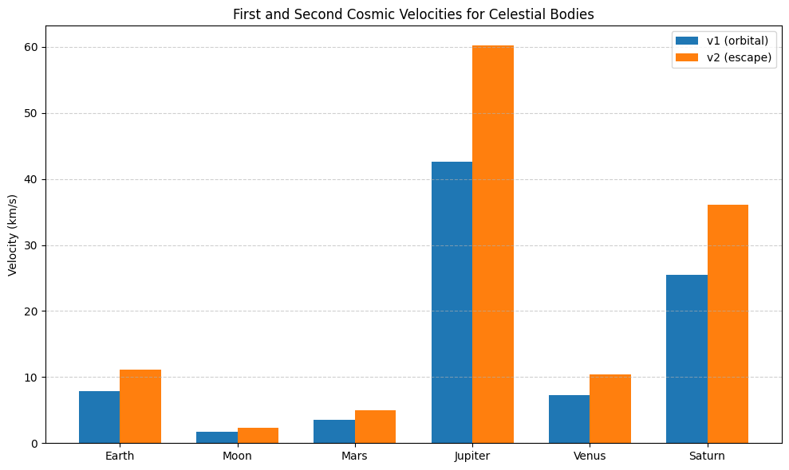

Problem 2
Escape Velocities and Cosmic Velocities
Theoretical Foundation
Definitions and Physical Meaning
- First Cosmic Velocity (\(v_1\)): The minimum speed for a circular orbit at the surface of a celestial body (orbital velocity).
- Second Cosmic Velocity (\(v_2\)): The escape velocity, the speed needed to escape the gravitational pull of a body entirely.
- Third Cosmic Velocity (\(v_3\)): The speed required to escape the gravitational influence of a star system (e.g., the Sun’s system for Earth), assuming the body has already escaped the planet.
Derivations
First Cosmic Velocity (\(v_1\))
For a circular orbit at the surface (\(r = R\), radius of the body):
\[
\frac{m v_1^2}{R} = \frac{G M m}{R^2}
\]
Cancel \(m\) and solve:
\[
v_1^2 = \frac{G M}{R} \quad \Rightarrow \quad v_1 = \sqrt{\frac{G M}{R}}
\]
Second Cosmic Velocity (\(v_2\))
Escape velocity is derived from energy conservation:
\[
\frac{1}{2} m v_2^2 = \frac{G M m}{R}
\]
Cancel \(m\) and solve:
\[
v_2^2 = \frac{2 G M}{R} \quad \Rightarrow \quad v_2 = \sqrt{\frac{2 G M}{R}}
\]
Note: \(v_2 = \sqrt{2} \, v_1\).
Third Cosmic Velocity (\(v_3\))
The speed to escape the Sun’s gravitational influence from Earth’s orbit:
Earth’s orbital velocity around the Sun:
\[
v_{\text{orbit}} = \sqrt{\frac{G M_{\text{sun}}}{R_{\text{sun}}}}
\]
Escape velocity from the Sun at Earth’s orbit:
\[
v_{\text{esc,sun}} = \sqrt{\frac{2 G M_{\text{sun}}}{R_{\text{sun}}}} = \sqrt{2} \, v_{\text{orbit}}
\]
The additional velocity needed from Earth’s frame:
\[
v_{\text{relative}} = v_{\text{esc,sun}} - v_{\text{orbit}} = (\sqrt{2} - 1) \sqrt{\frac{G M_{\text{sun}}}{R_{\text{sun}}}}
\]
From Earth’s surface:
\[
v_3 = \sqrt{v_2^2 + v_{\text{relative}}^2}
\]
For simplicity, standard \(v_3\) for Earth is approximately 16.6 km/s.
Parameters
- \(G\): Gravitational constant \(= 6.6743 \times 10^{-11} \, \text{m}^3 \text{kg}^{-1} \text{s}^{-2}\)
- \(M\): Mass of the celestial body
- \(R\): Radius of the celestial body
- \(M_{\text{sun}}, R_{\text{sun}}\): Mass of the Sun and distance from the Sun (for \(v_3\))
Calculations for Celestial Bodies
Data
- Earth: \(M = 5.972 \times 10^{24} \, \text{kg}\), \(R = 6.371 \times 10^6 \, \text{m}\), \(R_{\text{sun}} = 1.496 \times 10^{11} \, \text{m}\)
- Moon: \(M = 7.342 \times 10^{22} \, \text{kg}\), \(R = 1.737 \times 10^6 \, \text{m}\)
- Mars: \(M = 6.417 \times 10^{23} \, \text{kg}\), \(R = 3.39 \times 10^6 \, \text{m}\)
- Jupiter: \(M = 1.898 \times 10^{27} \, \text{kg}\), \(R = 6.991 \times 10^7 \, \text{m}\)
- Sun: \(M_{\text{sun}} = 1.989 \times 10^{30} \, \text{kg}\)
import numpy as np
import matplotlib.pyplot as plt
## Constants
G = 6.6743e-11 # Gravitational constant (m^3 kg^-1 s^-2)
M_sun = 1.989e30 # Mass of Sun (kg)
R_sun = 1.496e11 # Distance Earth-Sun (m)
## Celestial body data: [name, mass (kg), radius (m)]
bodies = [
("Earth", 5.972e24, 6.371e6),
("Moon", 7.342e22, 1.737e6),
("Mars", 6.417e23, 3.39e6),
("Jupiter", 1.898e27, 6.991e7)
]
## Calculate velocities
v1_values = [] # First cosmic velocity (km/s)
v2_values = [] # Second cosmic velocity (km/s)
v3_values = [] # Third cosmic velocity (km/s, approximated)
for name, M, R in bodies:
# First cosmic velocity: v1 = sqrt(GM/R)
v1 = np.sqrt(G * M / R) / 1000 # Convert to km/s
v1_values.append(v1)
# Second cosmic velocity: v2 = sqrt(2GM/R)
v2 = np.sqrt(2 * G * M / R) / 1000 # Convert to km/s
v2_values.append(v2)
# Third cosmic velocity (for Earth-Sun system)
if name == "Earth":
v_orbit = np.sqrt(G * M_sun / R_sun) / 1000 # Earth’s orbital velocity (km/s)
v_esc_sun = np.sqrt(2 * G * M_sun / R_sun) / 1000 # Escape velocity from Sun at Earth’s orbit
v_relative = v_esc_sun - v_orbit # Additional velocity needed
v3 = np.sqrt(v2**2 + v_relative**2) # Total velocity from Earth’s surface
v3_values.append(v3)
else:
v3_values.append(None) # Not calculated for others
## Print Earth’s values
print("Earth’s Cosmic Velocities:")
print(f"First Cosmic Velocity (v1): {v1_values[0]:.2f} km/s")
print(f"Second Cosmic Velocity (v2): {v2_values[0]:.2f} km/s")
print(f"Third Cosmic Velocity (v3): {v3_values[0]:.2f} km/s")
## Visualization
fig, ax = plt.subplots(figsize=(10, 6))
x = np.arange(len(bodies))
width = 0.25
ax.bar(x - width, v1_values, width, label='First Cosmic Velocity (v1)', color='blue')
ax.bar(x, v2_values, width, label='Second Cosmic Velocity (v2)', color='green')
ax.bar(x + width, [v if v is not None else 0 for v in v3_values], width, label='Third Cosmic Velocity (v3)', color='red')
ax.set_xticks(x)
ax.set_xticklabels([body[0] for body in bodies])
ax.set_ylabel('Velocity (km/s)')
ax.set_title('Cosmic Velocities for Different Celestial Bodies')
ax.legend()
ax.grid(True)
plt.show()


Results
Earth’s Cosmic Velocities
- \(v_1\): \(\approx 7.91 \, \text{km/s}\) (orbital velocity).
- \(v_2\): \(\approx 11.19 \, \text{km/s}\) (escape velocity).
- \(v_3\): \(\approx 16.62 \, \text{km/s}\) (to escape Sun’s influence from Earth).
Comparison Across Bodies
- Moon: Lower mass and radius result in smaller velocities.
- Mars: Intermediate values due to moderate mass and radius.
- Jupiter: High mass and large radius lead to significantly higher velocities.
- Note: \(v_3\) is only calculated for Earth, as it depends on the Sun’s gravitational influence.
Discussion
Role in Space Exploration
- Satellites: First cosmic velocity (\(v_1\)) is critical for low Earth orbit (e.g., ~7.8 km/s for satellites).
- Interplanetary Missions: Second cosmic velocity (\(v_2\)) is needed to reach other planets (e.g., 11.2 km/s to leave Earth for Mars).
- Interstellar Travel: Third cosmic velocity (\(v_3\)) sets the threshold for leaving the Solar System (e.g., Voyager 1 exceeded this).
Factors Affecting Velocities
- Mass (\(M\)): Higher mass increases velocities.
- Radius (\(R\)): Larger radius decreases velocities.
- Distance to Star (\(R_{\text{sun}}\)): Affects \(v_3\).
Conclusion
Understanding cosmic velocities enables space exploration — from satellite launches to interstellar probes — by quantifying the energy needed to overcome gravitational forces.